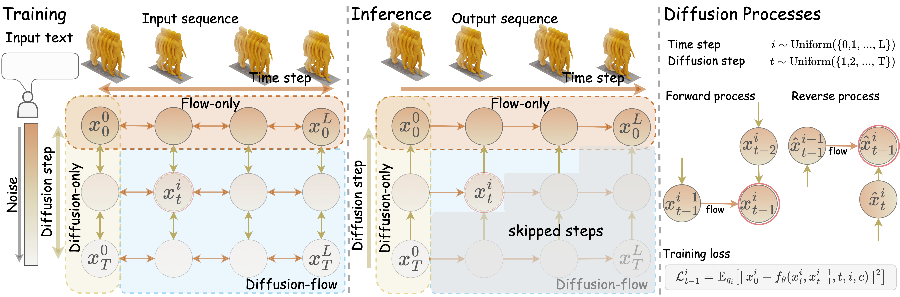
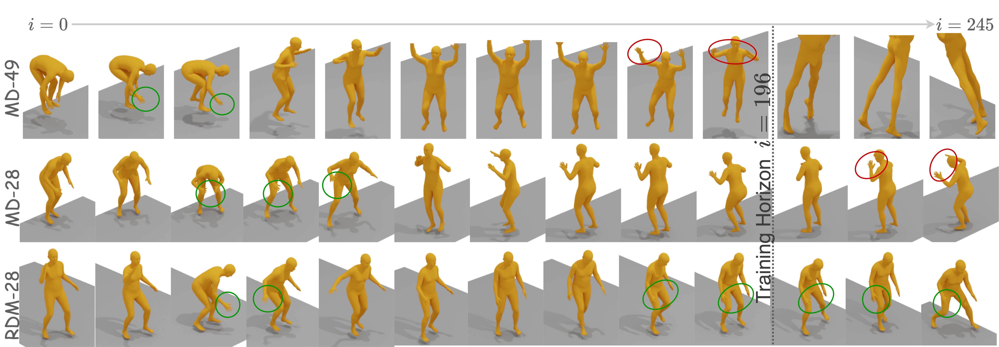
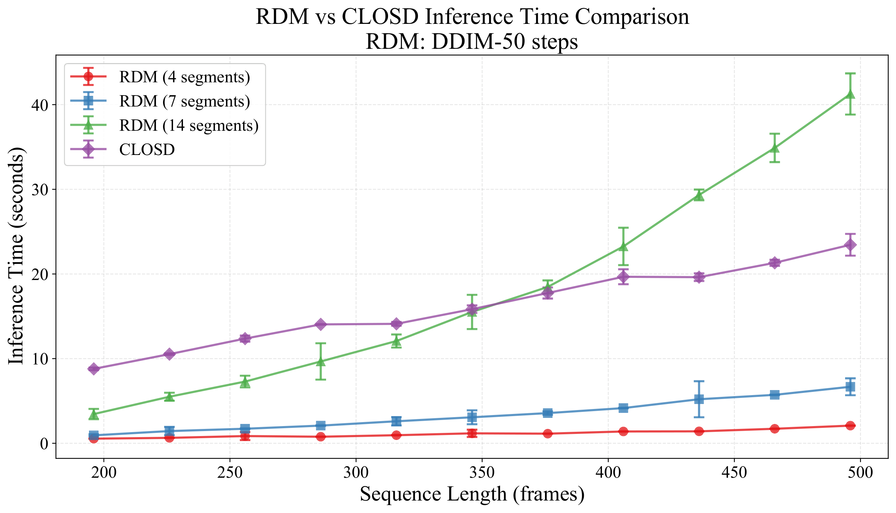
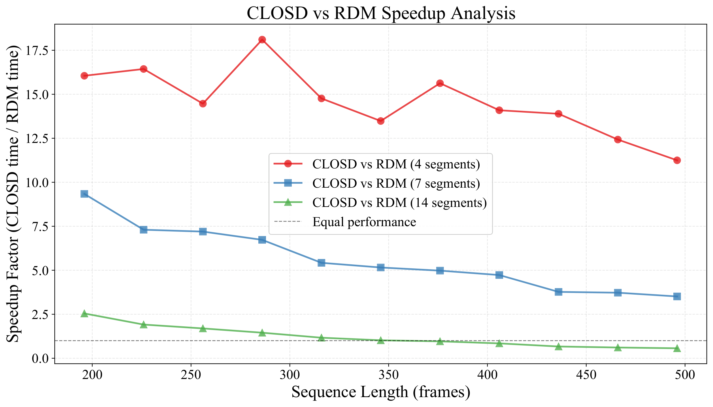
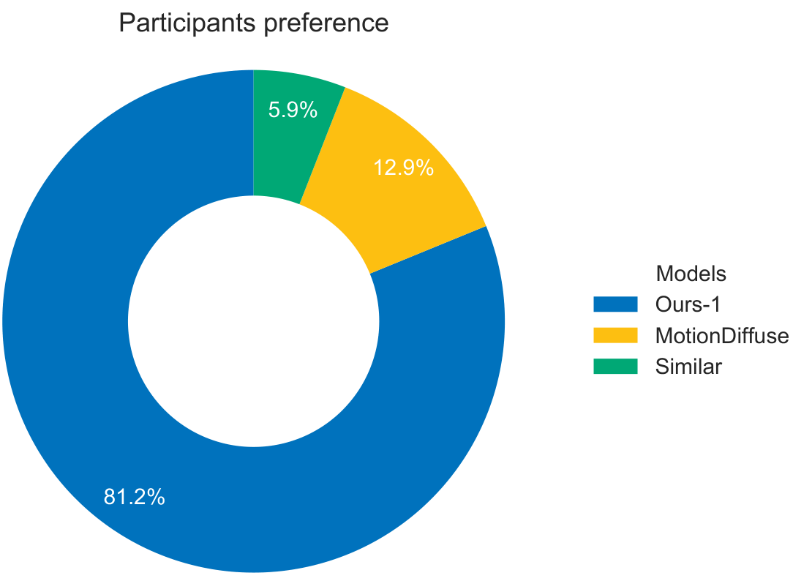
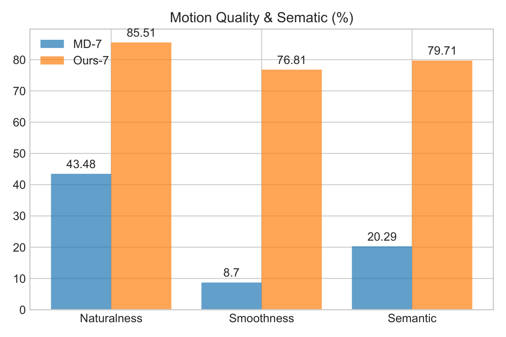

Human motion generation is a challenging task due to its high dimensionality and the difficulty of generating fine-grained motions. Diffusion methods have been proposed due to their high sample quality and expressiveness. Early approaches treat the entire sequence as a whole, which is computationally expensive and restricts sequence length. In contrast, autoregressive diffusion models generate longer sequences. However, their reliance on fully denoising previous frames complicates training and inference. Consequently, we propose RDM, a new recurrent diffusion formulation inspired by Recurrent Neural Networks (RNNs). RDM explicitly conditions the diffusion process on preceding noisy frames, avoiding the cost of full denoising. To overcome the challenge of maintaining its probabilistic nature, we employ Normalizing Flows to model recurrent connections. Our evaluations demonstrate RDM's effectiveness: it achieves comparable performance to autoregressive baselines and generates long sequences that remain aligned with the text. RDM also skips diffusion steps during inference, reducing computational cost by up to 18× over autoregressive baselines.
RDM extends diffusion to temporal sequences by formulating a 2D dependency grid across diffusion steps and temporal (segment) steps — analogous to how an RNN unrolls over time. Both the forward (noising) and reverse (denoising) processes are explicitly conditioned on the previous noisy segment, rather than on a fully clean one. This removes the need to fully denoise past frames before generating new ones, which is what makes prior autoregressive-diffusion methods slow and hard to train.
Directly conditioning on noisy hidden states does not, in general, define a valid probability distribution. To fix this, RDM models the recurrent transformation with an invertible Normalizing Flow, which keeps the diffusion objective mathematically well-defined while still letting information flow recurrently between segments. At inference, a staircase sampling schedule further skips redundant diffusion steps across segments, cutting inference cost well below autoregressive baselines while keeping motion fidelity.

Method overview. RDM extends diffusion to temporal sequences by formulating a 2D dependency grid across diffusion steps $t$ and temporal steps $i$. To maintain probabilistic tractability and a well-defined training objective, invertible Normalizing Flows model the recurrent transformations. The framework comprises three operational regimes — flow-only, diffusion-only, and joint diffusion-flow — that together let RDM trade off segment length, segment count, and inference cost.

Qualitative results on extended generation on HumanML3D. Using the prompt “A person is dribbling with a basketball”, we generate motion up to 245 frames — well beyond the training horizon (right of the dashed line); green/red circles mark correct/broken dribbling frames. Within the training horizon, MD-49 dribbles correctly at first but loses the motion near the boundary, raising its arms overhead, and fails beyond the horizon. MD-28 dribbles correctly for longer, but its hands stop dribbling once past the horizon. In contrast, RDM-28 keeps dribbling correctly throughout.
Rendered comparisons of RDM against volume-diffusion and segment-based baselines, including long, extended sequences and prompts involving dynamic object interaction (e.g. dribbling a basketball).
best second best third best
| Method | R@1 ↑ | R@2 ↑ | R@3 ↑ | FID ↓ | MM-Dist ↓ | MModality ↑ |
|---|---|---|---|---|---|---|
| VAE | ||||||
| TEMOS | 0.424 | 0.612 | 0.722 | 3.734 | 3.703 | 0.368 |
| T2M | 0.457 | 0.639 | 0.740 | 1.067 | 3.340 | 2.090 |
| MoMask | 0.521 | 0.713 | 0.807 | 0.045 | 2.958 | 1.241 |
| Volume Diffusion | ||||||
| MDM | 0.320 | 0.498 | 0.611 | 0.544 | 5.566 | 2.799 |
| MotionDiffuse | 0.491 | 0.681 | 0.782 | 0.630 | 3.113 | 1.553 |
| MLD | 0.481 | 0.673 | 0.772 | 0.473 | 3.196 | 2.413 |
| MotionMamba | 0.502 | 0.693 | 0.792 | 0.281 | 3.060 | 2.294 |
| ReMoDiffuse | 0.510 | 0.698 | 0.795 | 0.103 | 2.974 | 1.795 |
| Light-T2M | 0.511 | 0.699 | 0.795 | 0.040 | 3.002 | 1.670 |
| RDM-196 (ours) | 0.449 | 0.661 | 0.777 | 0.585 | 3.113 | 1.538 |
| Segment-based Diffusion | ||||||
| AMD | – | – | 0.617 | 0.586 | 5.469 | 2.512 |
| CLoSD (DiP) | 0.463 | 0.668 | 0.773 | 0.247 | 3.178 | – |
| A-MDM | – | – | – | 1.744 | – | – |
| MD-49 | 0.339 | 0.499 | 0.605 | 4.414 | 4.338 | 2.262 |
| MD-28 | 0.368 | 0.546 | 0.658 | 3.377 | 4.019 | 1.771 |
| RDM-49 (ours) | 0.442 | 0.664 | 0.762 | 0.312 | 3.604 | 1.544 |
| RDM-28 (ours) | 0.455 | 0.653 | 0.772 | 0.272 | 3.651 | 1.199 |
Ground-truth motion length used for all methods. Evaluated 20× with 95% CI. RDM-49/28 outperform segment-based baselines significantly and are comparable to CLoSD (DiP).
| Method | R@1 ↑ | R@2 ↑ | R@3 ↑ | FID ↓ | MM-Dist ↓ | MModality ↑ |
|---|---|---|---|---|---|---|
| VAE | ||||||
| TEMOS | 0.353 | 0.561 | 0.687 | 3.717 | 3.417 | 0.532 |
| T2M | 0.370 | 0.569 | 0.693 | 2.770 | 3.401 | 1.482 |
| MoMask | 0.433 | 0.656 | 0.781 | 0.204 | 2.779 | 1.131 |
| Volume Diffusion | ||||||
| MDM | 0.164 | 0.291 | 0.396 | 0.497 | 9.191 | 1.907 |
| MotionDiffuse | 0.417 | 0.621 | 0.739 | 1.954 | 2.958 | 0.730 |
| MLD | 0.390 | 0.609 | 0.734 | 0.404 | 3.204 | 2.192 |
| MotionMamba | 0.419 | 0.645 | 0.765 | 0.307 | 3.021 | 1.678 |
| ReMoDiffuse | 0.427 | 0.641 | 0.765 | 0.155 | 2.814 | 1.239 |
| Light-T2M | 0.444 | 0.670 | 0.794 | 0.161 | 2.746 | 1.005 |
| RDM-196 (ours) | 0.381 | 0.603 | 0.734 | 1.815 | 2.958 | 0.693 |
| Segment-based Diffusion | ||||||
| MD-49 | 0.307 | 0.482 | 0.609 | 2.855 | 4.128 | 2.960 |
| MD-28 | 0.273 | 0.453 | 0.579 | 5.556 | 4.579 | 2.444 |
| RDM-49 (ours) | 0.364 | 0.576 | 0.712 | 1.950 | 3.541 | 1.068 |
| RDM-28 (ours) | 0.377 | 0.591 | 0.715 | 1.819 | 3.412 | 0.590 |
RDM-49/28 significantly outperform segment-based baselines on KIT-ML. MD-x baselines degrade with more segments since KIT-ML's shorter sequences (max 196 frames) harm future-segment prediction.
Because RDM never needs to fully denoise previous segments, and its staircase schedule skips redundant diffusion steps, it is substantially cheaper at inference than both volume-diffusion and autoregressive segment-based baselines — while remaining competitive on quality.


Computational efficiency comparison between RDM and CLoSD (DiP). (left) Inference time vs. sequence length for RDM with 4, 7, 14 segments (DDIM-50 steps) and CLoSD; error bars show ±3 standard deviations. (right) Speedup dividing CLoSD's inference time by RDM's. RDM-49/28 outperform CLoSD by 3.51–18.11× across sequence lengths, with larger speedups on shorter sequences; RDM-49 is faster than RDM-28, and RDM-14 is the slowest of the three configurations.
| Method | Inference time (s) ↓ | FLOPs (T) ↓ | Segment shape |
|---|---|---|---|
| MotionDiffuse | 2.71 | 64.64 | x ∈ ℝ196×251 |
| CLoSD (DiP) | 8.73 | 229.44 | x ∈ ℝ40×251 |
| MD-28 | 5.40 | 83.41 | x ∈ ℝ28×251 |
| RDM-49 (ours) | 1.95 | 0.282 | x ∈ ℝ49×251 |
| RDM-28 (ours) | 2.61 | 0.533 | x ∈ ℝ28×251 |
RDM's FLOPs at DDIM-50 are roughly two orders of magnitude below CLoSD's, because RDM skips diffusion steps via staircase sampling instead of fully denoising every previous segment.


User study analysis. Semantic (%) denotes how well the generated motion visually corresponds to the input sentence; motion quality (%) reflects overall naturalness; smoothness (%) reflects motion coherence. Higher is better across all three.
Citation details (arXiv / BMVC proceedings) will be added once the paper is publicly available. In the meantime:
@article{mohamed2026rdm,
title={RDM: Recurrent Diffusion Model for Human Motion Generation},
author={Mohamed, Mirgahney and Cunningham, Harry Jake and Barbano, Riccardo and Deisenroth, Marc Peter and Agapito, Lourdes},
year={2026}}The research presented here has been supported by the UCL Centre for Doctoral Training in Foundational AI under UKRI grant number EP/S021566/1 and the UKRI/EPSRC AI Hub in Generative Models under grant number EP/Y028805/1. RB acknowledges support from the EPSRC (EP/V026259/1). The authors are also grateful to Baskerville Tier 2 HPC service (https://www.baskerville.ac.uk/); funded by the EPSRC and UKRI through the World Class Labs scheme (EP/T022221/1) and the Digital Research Infrastructure programme (EP/W032244/1) and is operated by Advanced Research Computing at the University of Birmingham. We thank Shalini Maiti, Abdallah Basheir, Wonbong Jang, Oscar Key, and Waleed Dawood for their fruitful discussions and useful feedback. We also thank Third Dimension, the startup where the lead author works, for their continued support and encouragement.
We referred to the project page of Nerfies when creating this project page.